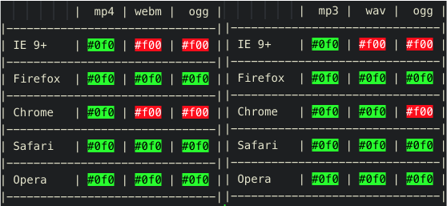

Tagesjournal
Block 01 - 07.01.19
Zu Beginn dieses Moduls lernten wir erstmal kennen, um was es bei diesem Modul geht, und wie dieses ablaufen wird.
Es wird ein Webprojekt und eine Gruppenarbeit geben. Im Webprojekt (dieses hier) geht es darum, eine Webseite responsive darzustellen und
bestimmte Inhalte zu erfüllen. Beispielsweise muss ein Abschnitt über ich selber sein, einer soll die einzelnen Blöcke beinhalten, etc.
Alle genauen Anforderungen sind hier.
In der Gruppenarbeit müssen wir ein Lernvideo über einen Begriff innerhalb der Webentwicklung erstellen. In meiner Gruppe sind Noé Lüthold und Gabriel Schafflützel.
Den Rest des Blockes habe ich angefangen, diese Seite zu planen.
Aufgabe 1.1
Definieren Sie den Begriff 'Multimedia'
Der Begriff Multimedia bezeichnet Inhalte und Werke, die aus mehreren, meist digitalen Medien bestehen: Text, Fotografie, Grafik, Animation, Audio und Video.
Wo wird Multimedia eingesetzt?
Überall. In Werbung, auf Webseiten, in Videos, etc...
Aufgabe 1.2
Recherchieren Sie nach Browsern
Google Chrome, Firefox, Opera, Safari, Internet Explorer, Microsoft Edge, Tor
Welche Engine & OS benutzen Sie?
Hauptsächlich Safari und Google Chrome, auf macOs Mojave
Aufgabe 1.3
Vektorgrafikprogramme
Adobe Illustrator (macOS, Windows // kostenpflichtig)
Inkscape (macOS, Windows // kostenfrei)
GravitDesigner (macOS, Windows // kostenfrei)
Videobearbeitungstools
iMovie (macOs // kostenfrei)
Adobe Premiere (macOs, Winodws // kostenpflichtig)
Audioprogramme
Audacity (macOs, Windows // kostenfrei)
Block 02 - 07.01.19
Im zweiten Block, am Nachmittag, plante ich weiterhin meine Seite und begann mit dem Erstellen der Dokumentation. Ich habe das Style-Guide zu meiner Seite erstellt.
Danach hatten wir einen kurzen Teil Theorie. Ein 'Onepager' ist eine Website, bei dieser der Inhalt nur auf einer einzigen Seite ist. Alle Links sind innerhalb der selben Seite.
Wir lernten auch, dass eine Webseite generell 'Mobile first' erstellt wird, erst danach die Desktop Version.
Ich finde bezüglich diesem Punkt, dass es variiert. Ich zum Beispiel finde es einfacher, wenn ich mit der Desktop Version beginne, und die Mobile Version im gleichen Zug mitschreibe.
Es braucht nicht viel, damit eine Webseite responsive ist. Das wichtigste ist, im <head> folgenden Code einzubauen:
<meta name="viewport" content="width=device-width, inital-scale=1">
Der nächste Schritt ist dann, im CSS den @media query Tag zu implementieren.
@media screen only and (max-width: 420px) {
h2 {
font-size: 18px;
}
}
Block 03 - 08.01.19
Aufgabe 2
In der Aufgabe 2 ging es darum, eine vorgegebene Webseite responsive zu machen.
Nachfolgend ist das Resultat aus dieser Übung. Hier ist der Sourcecode. Mit dem Button können Sie zwischen der Mobile- und der Desktopversion switchen.
Auf dem Handy ist das iframe nicht sichtbar.
Aufgabe 3
Danach habe ich mich noch mit der Aufgabe 3 - Icons und Schriften beschäftigt. Hier geht's zu meiner Lösung.Block 04 - 14.01.19
Da ich mit der Aufgabe 3 bereits im letzten Block fertig wurde und auch mein Webseitenprojekt fertig ist, habe ich mich heute mit der Aufgabe 4 beschäftigt.
Aufgabe 4
Favicons benutzt man, um dem User einen bestimmten Wiedererkennungseffekt zu geben. Sie werden beispielsweise in Apps oder Webseiten gebraucht. Mein Favicon ist oben in der Registerkarte zu erkennen. Ein dunkelgraues 'm' mit einer blauen, geschwungener Klammer.
www.favicon-generator.org ist eine gute Plattform, um gleich alle Faviconformate zu generieren.
Der zweite Teil der Aufgabe 4 war es, 8 Bilder kleiner zu skalieren. Diese Funktion hat die Vorschau App von macOs bereits mit dabei, daher ging auch dies ziemlich schnell. Dies sind diese acht Bilder:


Block 05 - 14. Januar 2019
Aufgabe 5
Am Nachmittag habe ich mich mit der 5. Aufgabe beschäftigt. Es geht darum, Elemente mittels JavaScript anzusprechen und stilistisch zu verändern.
Folgendermassen sieht mein Resultat aus. Hier finden Sie den Sourcecode dazu.
Block 06 - 21. Januar 2019
Im 6. Block habe ich mich mit dem zweiten Teil der Aufgabe 5 beschäftigt. Gallerien und Sliders.
Die Gallerie mussten wir mit Lightbox 2 lösen. Alle Informationen zu Lightbox sind im Internet zu finden.
Den Slider ganz unten haben wir mit responsiveslides.com gelöst. Folgendes sind alles Einstellungen, welche manuell geändert werden können.
$(".rslides").responsiveSlides({
auto: true,
speed: 500,
timeout: 4000,
pager: false,
nav: false,
random: false,
pause: false,
pauseControls: true,
prevText: "Previous",
nextText: "Next",
maxwidth: "",
navContainer: "",
manualControls: "",
namespace: "rslides",
before: function(){},
after: function(){}
});
Auf dem Handy ist das iframe nicht sichtbar.
Block 07 - 21. Januar 2019
In diesem Block habe ich die Aufgabe 6 - Audio und Videoformate gelöst. Die Kompabilität der gängigsten Audio und Videoformate sind nachfolgend zu sehen.
Hier geht es zum Sourcecode.

Block 08 - 22. Januar 2019
In diesem Block haben wir an unserem Projekt gearbeitet.
Nachfolgend ist eine Galerie mit Bildern, wie wir am Projekt gearbeitet haben.


{kind=link}
{kind=link}
{kind=link}
Block 09 - 28. Januar 2019
Im letzten Block vor der Zwischenprüfung habe ich hauptsäschlich repetiert. Ich hatte alle Aufgaben bereits gelöst. Einigen Kollegen konnte ich noch ein paar Unklarheiten beseitigen.
Ich habe den Code dieser Webseite noch ein wenig Optimiert und fertig Kommentiert, damit ich das ganze Projekt heute Abend absenden kann.